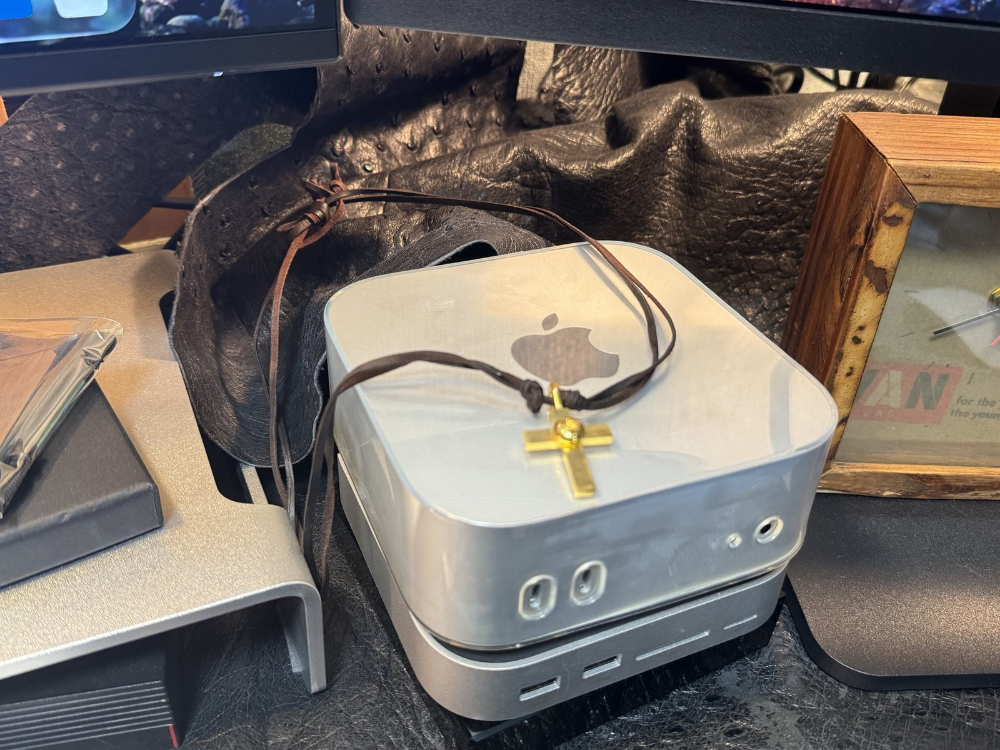
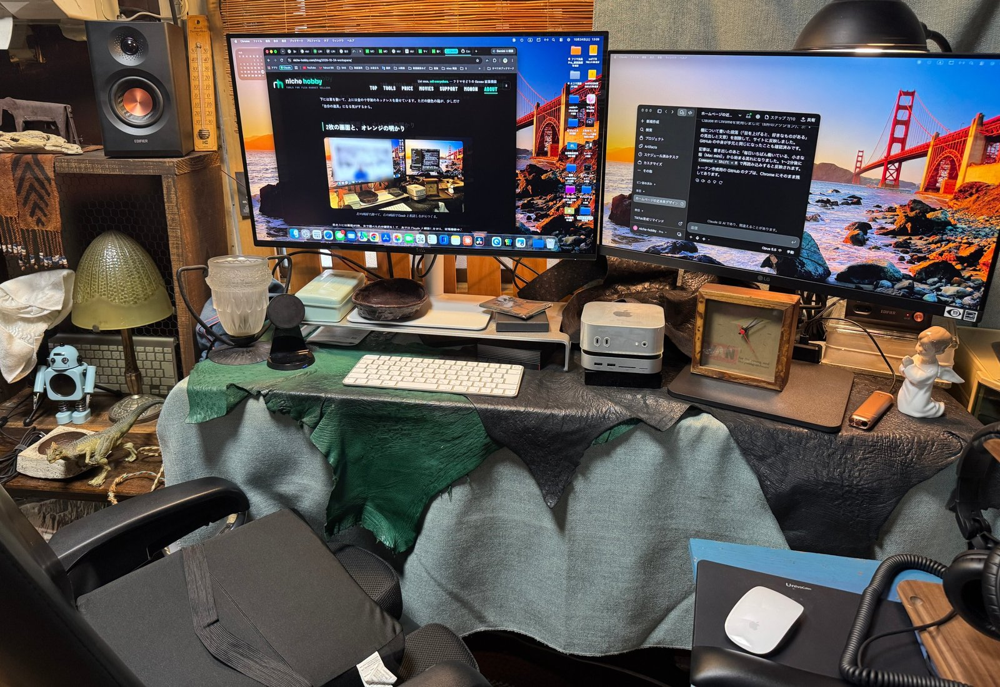

フリマの拡張機能も、MONON も、このホームページも。ぜんぶ同じ場所から生まれています。
今日は、わたしがいちばん落ち着ける作業スペースを、置いているものひとつずつ紹介します。機械も、古いものも、ちいさな置物も。ぜんぶ「好き」で選んだものばかりです。
毎日いちばん働いている、小さな箱

コードを書くのも、動画を編集するのも、この小さな Mac mini M4 Pro です。メモリは 48GB。DaVinci Resolve で動画を書き出しながら、ブラウザで拡張機能のテストをしていても、ほとんど止まりません。
本体の下には UGREEN のドックを重ねていて、SSD もここに入れています。見た目は1台分なのに、差し込み口がぐっと増えるのがお気に入りです。
そして、下には革を敷いて、上には金の十字架のネックレスを乗せています。ただの銀色の箱が、少しだけ「自分の道具」になる気がするから。
2枚の画面と、それぞれの役わり
机の上には画面が2枚。
左は Dell の 27 インチ 4K（S2725QC）。USB-C 1本で Mac mini とつながっていて、文字がとてもくっきり見えます。調べものや、サイトの表示の確認はこちら。アルミのモニター台に乗せて、目の高さを合わせています。
右は LG の 24 インチ。こちらでは Claude と相談しながら、拡張機能やこのホームページをつくっています。「左で確かめて、右で直す」。この行ったり来たりが、いちばん集中できる形でした。
手元はシンプルに、Apple の白いキーボードとマウス。画面まわりが黒っぽいぶん、白い道具が浮かんで見えるのも好きなところです。
座る場所と、聞く道具
椅子は コクヨの「フィロソフィー」。長い時間すわっても腰がつらくなりにくくて、作業スペースを整えるとき、いちばん最初に決めた道具です。じつはこれもメルカリで見つけました。フリマの道具をつくっている人間が、フリマで椅子を買う。ちょっと面白いなと思っています。
左の棚には EDIFIER のスピーカー（MR3）。木目の箱に銅色のコーンで、音を出していないときも、置物みたいにきれいです。動画の音を細かく確認するときは、ゼンハイザーのヘッドホン（HD280 Pro）に持ちかえます。
ミュラー兄弟のランプ

この作業スペースで、いちばん大切にしているのが、左端の緑のランプです。
フランスのリュネヴィルにあったガラス工房、ミュラー兄弟（Muller Frères）のもの。ドームの形をしたガラスのシェードに、うろこのような模様が浮かんでいて、明かりをつけると緑と黄色がまじった、やわらかい光になります。
100年近く前に、だれかの部屋を照らしていたかもしれない明かりが、いまは Chrome 拡張をつくる机のとなりにある。そう考えると、なんだか不思議で、少しうれしくなります。
画面の左下には、すりガラスのシェードをつけた小さなランプも置いています。こちらは黒い金属の腕が、ちょっと植物のつるみたいで気に入っています。
机の上の、ちいさな住人たち
作業の合間にふと目に入る、小物たちも紹介させてください。
- 水色のレトロなロボット：ランプの足もとで、いつもこちらを見ています。MONON の遠い親せき、ということにしています。
- 恐竜のフィギュア：石の小皿の上で、じっと何かをねらっている顔。
- 木の温度計：スピーカーの横に立てかけた、昔ながらの寒暖計。季節の変わり目は、これで部屋の温度を確かめます。
- 木の枠の置き時計：右の画面の下に置いた、四角い時計。木の焼けた色が、使いこまれた道具みたいで好きです。
- 手を合わせる天使：右端の白い陶器の天使。行き詰まったときに目が合うと、少しだけ落ち着きます。
- 緑と黒の革：机いっぱいに広げている革。キーボードやマウスを置いても冷たくなくて、さわるたびに、ちょっとだけ気分が上がります。
窓には、すだれ。昼はやわらかい光が入って、夜はランプの明かりと重なって、オレンジ色の部屋になります。
好きなものに囲まれていると、つくるものにも、少しずつ自分らしさが出てくる。
同じ作業のくり返しを短くするツールも、真顔の宇宙人 MONON も、この場所で少しずつ形になってきました。
最新の機械と、古いガラスのランプ。合わないようで、ここではちゃんとなじんでいます。これからも、ここでゆっくり、つくっていきます。